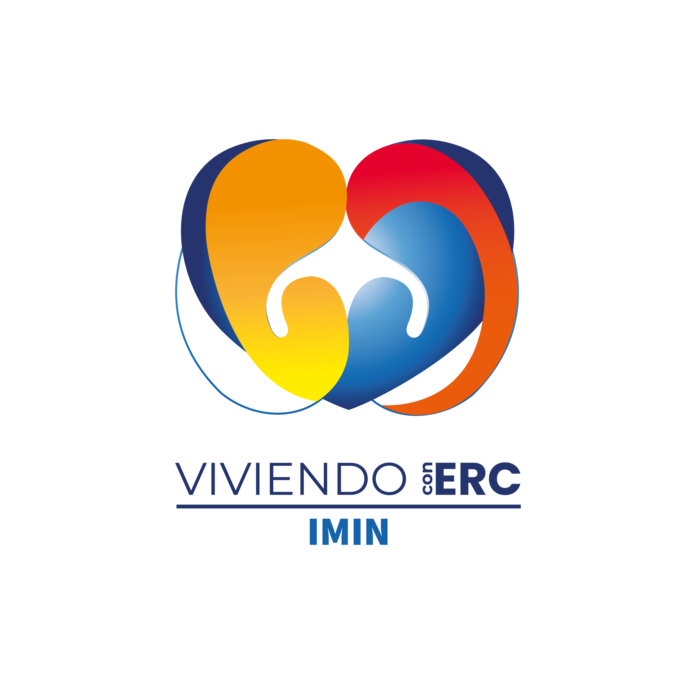

01
Catéter no tunelizado
Se coloca con rapidez, se utiliza de inmediato y suele indicarse en situaciones urgentes. Generalmente es para uso corto.

VIVIENDO iERCIMINConoce las diferencias entre catéteres y aprende a cuidarlos día con día.
Explora esta secciónEl catéter venoso central es un tubo delgado y flexible que se coloca en una vena grande para que la sangre pueda circular hacia la máquina de hemodiálisis y regresar al cuerpo.
Se utiliza con frecuencia cuando es necesario comenzar el tratamiento rápidamente. Su lugar y tiempo de uso dependen de lo que indique el equipo médico.

Se coloca con rapidez, se utiliza de inmediato y suele indicarse en situaciones urgentes. Generalmente es para uso corto.
Pasa por un trayecto bajo la piel antes de llegar a una vena. Puede utilizarse durante más tiempo mientras se prepara otro acceso.


Puede colocarse en el cuello, el pecho o la ingle, según la necesidad clínica. Los catéteres tienen mayor riesgo de infecciones y coágulos que una fístula, por lo que el equipo médico valorará otras alternativas cuando sea posible.
No sumerjas el catéter. Protégelo para que no se moje.
Mantén limpia y seca la zona de salida, siguiendo las indicaciones.
Antes y después de cualquier contacto que indique el equipo médico.
Solo personal capacitado debe usarlo y cambiar su apósito.
Atención a dolor, fiebre, secreción, enrojecimiento o inflamación.
Mantenlo protegido y alejado de superficies sucias o animales.

Si observas fiebre o escalofríos, dolor, inflamación, enrojecimiento o salida de secreción, necesitas valoración médica pronta. No retires, aflojes ni manipules por tu cuenta los apósitos o conexiones.
Acude a tus sesiones regularmente y sigue las indicaciones sobre el cuidado y cambio del apósito.